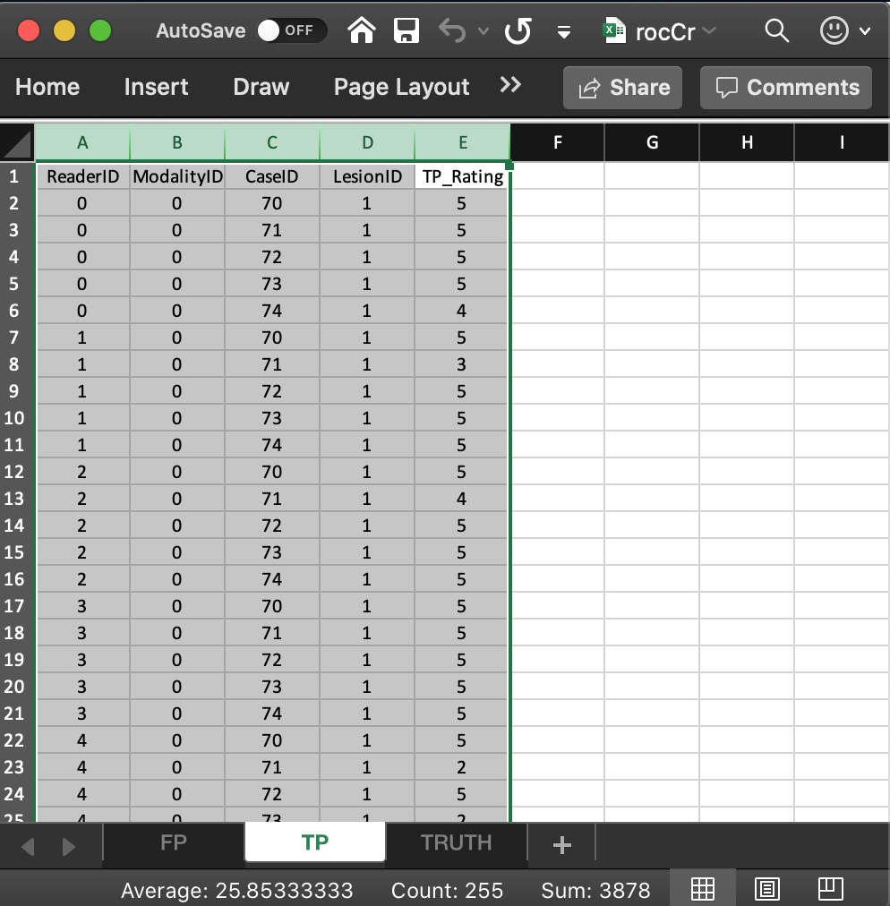

Chapter 00, Vignette 1: JAFROC Excel file data format: ROC FCTRL
Dev P. Chakraborty, PhD
2020-12-05
Ch00Vig1DataFormatRocFctrl.RmdIntroduction
- The purpose of this vignette is to explain the data format of the input Excel file and to introduce the capabilities of the function
DfReadDataFile(). Background on observer performance methods are in my book (Chakraborty 2017). - I will start with Receiver Operating Characteristic (ROC) data (Metz 1978) as this is by far the simplest paradigm.
- In the ROC paradigm the observer assigns a rating to each image. A rating is an ordered numeric label, and, in our convention, higher values represent greater certainty or confidence level for presence of disease. With human observers, a 5 (or 6) point rating scale is typically used, with 1 representing highest confidence for absence of disease and 5 (or 6) representing highest confidence for presence of disease. Intermediate values represent intermediate confidence levels for presence or absence of disease.
- Note that location information, if applicable, associated with the disease, is not collected.
- There is no restriction to 5 or 6 ratings. With algorithmic observers, e.g., computer aided detection (CAD) algorithms, the rating could be a floating point number and have infinite precision. All that is required is that higher values correspond to greater confidence in presence of disease.
Note to existing users
- The Excel file format has recently undergone changes resulting in 4 extra
listmembers in the final createddatasetobject (12 instead of 8). - Code which should ran on the old format Excel files as the 4 extra list members are simply ignored.
- Reasons for the change will become clearer in these vignettes (basically they are needed for generalization to other data collection paradigms instead of crossed, for example to split-plot data acquisition paradigm) and for better data entry error control.
- The Excel file has three worksheets. These are named
Truth,NL(orFP) andLL(orTP).
The Truth worksheet
- The
Truthworksheet contains 6 columns:CaseID,LesionID,Weight,ReaderID,ModalityIDandParadigm. - The first five columns contain as many rows as there are cases (images) in the dataset.
-
CaseID: unique integers, one per case, representing the cases in the dataset. -
LesionID: integers 0 or 1, with each 0 representing a non-diseased case and each 1 representing a diseased case. - In the current toy dataset, the non-diseased cases are labeled
1,2and3, while the diseased cases are labeled70,71,72,73and74. The values do not have to be consecutive integers; they need not be ordered; the only requirement is that they be unique integers. -
Weight: Not used for ROC data, a floating point value, typically filled in with 0 or 1. -
ReaderID: a comma-separated listing of reader labels (one or more readers), each represented by a unique integer, that have interpreted the case. In the example shown below each cell has the value0, 1, 2, 3, 4meaning that each of these readers has interpreted all cases (hence the “crossed” design). With multiple readers each cell in this column has to be text formatted as otherwise Excel will not accept it. -
ModalityID: a comma-separated listing of modalities (one or more modalities), each represented by a unique integer, that are applied to each case. In the example each cell has the value0, 1. With multiple modalities each cell has to be text formatted as otherwise Excel will not accept it. -
Paradigm: this column contains two cells,ROCandcrossed. It informs the software that this is an ROC dataset, and the design is crossed, meaning each reader has interpreted each case in each modality (in statistical terminology: modality and reader factors are “crossed”). - There are 5 diseased cases in the dataset (the number of 1’s in the
LesionIDcolumn of theTruthworksheet). - There are 3 non-diseased cases in the dataset (the number of 0’s in the
LesionIDcolumn). - There are 5 readers in the dataset (each cell in the
ReaderIDcolumn contains the string0, 1, 2, 3, 4). - There are 2 modalities in the dataset (each cell in the
ModalityIDcolumn contains the string0, 1).

The structure of an ROC dataset
The example shown above corresponds to Excel file inst/extdata/toyFiles/ROC/rocCr.xlsx in the project directory. Toy files are artificial small datasets intended to illustrate essential features of the data format. In the following code chunk the first statement retrieves the name of the data file, located in a hidden directory that one need not be concerned with. The second statement reads the file using the function DfReadDataFile() and saves it to object x. The third statement shows the structure of the dataset object x.
rocCr <- system.file("extdata", "toyFiles/ROC/rocCr.xlsx",
package = "RJafroc", mustWork = TRUE)
x <- DfReadDataFile(rocCr, newExcelFileFormat = TRUE)
str(x)
#> List of 3
#> $ ratings :List of 3
#> ..$ NL : num [1:2, 1:5, 1:8, 1] 1 3 2 3 2 2 1 2 3 2 ...
#> ..$ LL : num [1:2, 1:5, 1:5, 1] 5 5 5 5 5 5 5 5 5 5 ...
#> ..$ LL_IL: logi NA
#> $ lesions :List of 3
#> ..$ perCase: int [1:5] 1 1 1 1 1
#> ..$ IDs : num [1:5, 1] 1 1 1 1 1
#> ..$ weights: num [1:5, 1] 1 1 1 1 1
#> $ descriptions:List of 7
#> ..$ fileName : chr "rocCr"
#> ..$ type : chr "ROC"
#> ..$ name : logi NA
#> ..$ truthTableStr: num [1:2, 1:5, 1:8, 1:2] 1 1 1 1 1 1 1 1 1 1 ...
#> ..$ design : chr "FCTRL"
#> ..$ modalityID : Named chr [1:2] "0" "1"
#> .. ..- attr(*, "names")= chr [1:2] "0" "1"
#> ..$ readerID : Named chr [1:5] "0" "1" "2" "3" ...
#> .. ..- attr(*, "names")= chr [1:5] "0" "1" "2" "3" ...- In the above code chunk flag
newExcelFileFormatis set toTRUEas otherwise columns D - F in theTruthworksheet are ignored and the dataset is assumed to be crossed, withdataTypeautomatically determined from the contents of the FP and TP worksheets. - Flag
newExcelFileFormat = FALSEis for compatibility with older JAFROC format Excel files, which did not have these columns in theTruthworksheet. Its usage is deprecated. - The dataset object
xis alistvariable with 3 members. - The
x$ratings$NLmember, with dimension [2, 5, 8, 1], contains the ratings of normal cases. The extra values in the third dimension, filled withNAs, are needed for compatibility with FROC datasets. - The
x$ratings$LL, with dimension [2, 5, 5, 1], contains the ratings of abnormal cases. - The
x$lesions$perCasemember is a vector with 5 ones representing the 5 diseased cases in the dataset. - The
x$lesions$IDsmember is an array with 5 ones. - The
x$lesions$weightsmember is an array with 5 ones. - The
lesionVector,lesionIDandlesionWeightmembers are not used for ROC datasets. They are there for compatibility with FROC datasets. - The
dataTypemember indicates that this is anROCdataset. - The
x$modalityIDmember is a vector with two elements"0"and"1", naming the two modalities. - The
x$readerIDmember is a vector with five elements"0","1","2","3"and"4", naming the five readers. - The
x$designmember is ; specifies the dataset design, which is “CROSSED”. - The
x$descriptions$truthTableStrmember quantifies the structure of the dataset, as explained in Vignette #3. It is used in theDfReadDataFile()function to check for data entry errors.
The false positive (FP) ratings
These are found in the FP or NL worksheet, see below. 
- It consists of 4 columns, each of length 30 (= # of modalities times number of readers times number of non-diseased cases).
-
ReaderID: the reader labels:0,1,2,3and4. Each reader label occurs 6 times (= # of modalities times number of non-diseased cases). -
ModalityID: the modality or treatment labels:0and1. Each label occurs 15 times (= # of readers times number of non-diseased cases). -
CaseID: the case labels for non-diseased cases:1,2and3. Each label occurs 10 times (= # of modalities times # of readers). - The label of a diseased case cannot occur in the FP worksheet. If it does the software generates an error.
-
FP_Rating: the floating point ratings of non-diseased cases. Each row of this worksheet contains a rating corresponding to the values ofReaderID,ModalityIDandCaseIDfor that row.
The true positive (TP) ratings
These are found in the TP or LL worksheet, see below. 
- It consists of 5 columns, each of length 50 (= # of modalities times number of readers times number of diseased cases).
-
ReaderID: the reader labels:0,1,2,3and4. Each reader label occurs 10 times (= # of modalities times number of diseased cases). -
ModalityID: the modality or treatment labels:0and1. Each label occurs 25 times (= # of readers times number of diseased cases). -
LesionID: For an ROC dataset this column contains fifty 1’s (each diseased case has one lesion). -
CaseID: the case labels for non-diseased cases:70,71,72,73and74. Each label occurs 10 times (= # of modalities times # of readers). The label of a non-diseased case cannot occur in the TP worksheet. -
TP_Rating: the floating point ratings of diseased cases. Each row of this worksheet contains a rating corresponding to the values ofReaderID,ModalityID,LesionIDandCaseIDfor that row.
Correspondence between NL member of dataset and the FP worksheet
- The list member
x$ratings$NLis an array withdim = c(2,5,8,1).- The first dimension (2) comes from the number of modalities.
- The second dimension (5) comes from the number of readers.
- The third dimension (8) comes from the total number of cases.
- The fourth dimension is alway 1 for an ROC dataset.
- The value of
x$ratings$NL[1,5,2,1], i.e., 5, corresponds to row 15 of the FP table, i.e., toModalityID= 0,ReaderID= 4 andCaseID= 2. - The value of
x$ratings$NL[2,3,2,1], i.e., 4, corresponds to row 24 of the FP table, i.e., toModalityID1,ReaderID2 andCaseID2. - All values for case index > 3 are
-Inf. For example the value ofx$ratings$NL[2,3,4,1]is-Inf. This is because there are only 3 non-diseased cases. The extra length is needed for compatibility with FROC datasets.
Correspondence between LL member of dataset and the TP worksheet
- The list member
x$ratings$LLis an array withdim = c(2,5,5,1).- The first dimension (2) comes from the number of modalities.
- The second dimension (5) comes from the number of readers.
- The third dimension (5) comes from the number of diseased cases.
- The fourth dimension is alway 1 for an ROC dataset.
- The value of
x$ratings$LL[1,1,5,1], i.e., 4, corresponds to row 6 of the TP table, i.e., toModalityID= 0,ReaderID= 0 andCaseID= 74. - The value of
x$ratings$LL[1,2,2,1], i.e., 3, corresponds to row 8 of the TP table, i.e., toModalityID= 0,ReaderID= 1 andCaseID= 71. - There are no -Inf values in
x$ratings$LL:any(x$ratings$LL == -Inf)= FALSE.
Correspondence using the which function
- Converting from names to integer-indices (indicating position in an array) can be confusing.
- The following example uses the
whichfunction to help out. - The first line says that the
abnormalCasenamed 70 corresponds to position (or index) 1 in the LL array case dimension. - The second line prints the NL rating for
modalityID= 0,readerID= 1 andnormalCase= 1. - The third line prints the LL rating for
modalityID= 0,readerID= 1 andabnormalCase= 70. - The last line shows what happens if one enters an invalid value for the name; the result is a
numeric(0). - The reader is encouraged to examine the correspondence between the NL and LL ratings and the Excel file using this method.
which(x$abnormalCases == 70)
#> integer(0)
x$ratings$NL[which(x$modalityID == "0"),which(x$readerID == "1"),which(x$normalCases == 1),1]
#> <0 x 0 x 0 array of double>
#>
x$ratings$LL[which(x$modalityID == "0"),which(x$readerID == "1"),which(x$abnormalCases == 70),1]
#> <0 x 0 x 0 array of double>
#>
x$ratings$LL[which(x$modalityID == "a"),which(x$readerID == "1"),which(x$abnormalCases == 70),1]
#> <0 x 0 x 0 array of double>
#> A single reader dataset
rocCr1R <- system.file("extdata", "toyFiles/ROC/rocCr1R.xlsx",
package = "RJafroc", mustWork = TRUE)
x <- DfReadDataFile(rocCr1R, newExcelFileFormat = TRUE)
str(x)
#> List of 3
#> $ ratings :List of 3
#> ..$ NL : num [1:2, 1, 1:8, 1] 2 3 3 2 2 ...
#> ..$ LL : num [1:2, 1, 1:5, 1] 5 5 3 3 5 5 5 5 5 5
#> ..$ LL_IL: logi NA
#> $ lesions :List of 3
#> ..$ perCase: int [1:5] 1 1 1 1 1
#> ..$ IDs : num [1:5, 1] 1 1 1 1 1
#> ..$ weights: num [1:5, 1] 1 1 1 1 1
#> $ descriptions:List of 7
#> ..$ fileName : chr "rocCr1R"
#> ..$ type : chr "ROC"
#> ..$ name : logi NA
#> ..$ truthTableStr: num [1:2, 1, 1:8, 1:2] 1 1 1 1 1 1 NA NA NA NA ...
#> ..$ design : chr "FCTRL"
#> ..$ modalityID : Named chr [1:2] "0" "1"
#> .. ..- attr(*, "names")= chr [1:2] "0" "1"
#> ..$ readerID : Named chr "1"
#> .. ..- attr(*, "names")= chr "1"References
Chakraborty, Dev P. 2017. Observer Performance Methods for Diagnostic Imaging - Foundations, Modeling, and Applications with R-Based Examples. Book. Boca Raton, FL: CRC Press.
Metz, C. E. 1978. “Basic Principles of Roc Analysis.” Journal Article. Seminars in Nuclear Medicine 8 (4): 283–98.